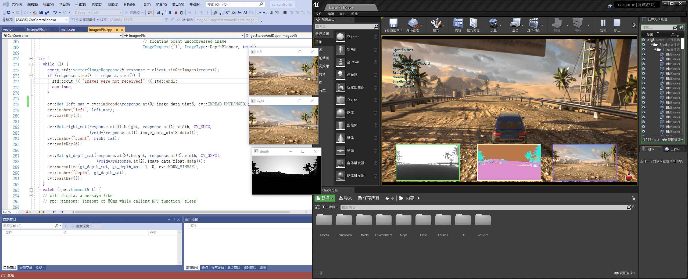
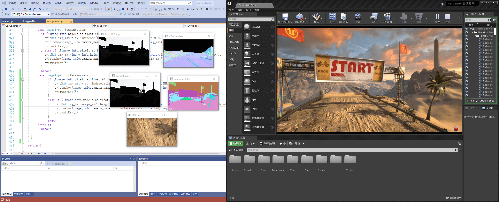

接下去主要介绍一下 AirSim 的 APIs 的使用, 主要参考 官方 文档, 并结合结合 OpenCV 来用 C++ 实现部分 官方 Python 的例程.
[TOC]
读取相机图片 官方例程 提供了两种读取相机图片的方式 (需要修改, 代码参考如下). 这个例程获取 “0” 号相机的单幅图片. 返回值为 png 格式图片的字节. 如果要获取其他格式图片或者其他可用相机的图片参考下一小节.
1 2 3 4 5 6 7 8 9 10 11 12 13 #include "vehicles/multirotor/api/MultirotorRpcLibClient. hpp" int getOneImage () using namespace std ; using namespace msr::airlib; msr::airlib::MultirotorRpcLibClient client; msr::airlib::vector <uint8_t > png_image = client. simGetImage("0" , VehicleCameraBase::ImageType::Scene); }
更加灵活的获取图片 simGetImages API 相比于 simGetImage API 更加复杂, 举个例子, 你可以通过单个 API 调用获取左侧、右侧、左侧的相机深度视图. simGetImagesAPI 允许你获取未压缩的图片或者浮点单通道的图片数据 (而不是 8 位 3 通道 (RGB)).
1 ImageRequest(const std ::string & camera_name_val, ImageCaptureBase::ImageType image_type_val, bool pixels_as_float_val = false , bool compress_val = true )
ImageRequest 图片请求类的参数为
camera_name_val: 相机编号, 可以输入 "0", "1", "2", "3", "4" 或者 "front_center", "front_right", "front_left", "fpv", "back_center".
image_type_val: 图片类型, 可支持的图片类型有:
1 2 3 4 5 6 7 8 Scene = 0 , DepthPlanner = 1 , DepthPerspective = 2 , DepthVis = 3 , DisparityNormalized = 4 , Segmentation = 5 , SurfaceNormals = 6 , Infrared = 7
pixels_as_float_val: 是否为浮点值, 默认为 false.
compress_val: 是否是压缩数据, 默认为 true
PS: 后两个参数这里会影响到 opencv 的矩阵或者解码图片. 这里通过将一组图像请求信息 ImageRequest 放入容器中, 通过 simGetImages 一次性请求. 之后可通过迭代获取各个相机的图像数据.
1 2 3 4 5 6 7 8 9 10 11 12 13 14 15 16 17 18 19 20 21 22 23 24 25 26 int getStereoAndDepthImages () using namespace std ; using namespace msr::airlib; typedef VehicleCameraBase::ImageRequest ImageRequest; typedef VehicleCameraBase::ImageResponse ImageResponse; typedef VehicleCameraBase::ImageType ImageType; msr::airlib::MultirotorRpcLibClient client; msr::airlib::vector <ImageRequest> request = { ImageRequest("0" , ImageType::Scene), ImageRequest("1" , ImageType::Scene, false , false ), ImageRequest("1" , ImageType::DepthPlanner, true ) }; const vector <ImageResponse>& response = client. simGetImages(request); }
通过 OpenCV 显示图片 虽然获取到的图片是 uint8_t 类型的数据, 但是无法通过直接转换成 cv::Mat 来使用 OpenCV 进行操作处理. 主要是获取到的是压缩的图片数据. 这里要使用 cv::imdecode 来对图片进行解码. 对应的两个 API 略有不同.
如果是压缩的数据：需要用 cv::imdecode 来解码生成 cv::Mat 的数据格式； 如果是非压缩的数据, 可以直接进行构造. 具体可见代码. 深度图片需要对 Mat 调用 normalize 归一化, 否则图片可能全白.
参考资料:
https://github.com/microsoft/AirSim/issues/966
https://github.com/Microsoft/AirSim/issues/491
完整源码如下：
1 2 3 4 5 6 7 8 9 10 11 12 13 14 15 16 17 18 19 20 21 22 23 24 25 26 27 28 29 30 31 32 33 34 35 36 37 38 39 40 41 42 43 44 45 46 47 48 49 50 51 52 53 54 55 56 57 58 59 60 61 #include <iostream> #include "opencv2/opencv. hpp" #include "vehicles/multirotor/api/MultirotorRpcLibClient. hpp" int ImageAPIs::getStereoAndDepthImages4 () using namespace std ; using namespace msr::airlib; typedef ImageCaptureBase::ImageRequest ImageRequest; typedef ImageCaptureBase::ImageResponse ImageResponse; typedef ImageCaptureBase::ImageType ImageType; msr::airlib::MultirotorRpcLibClient client; msr::airlib::vector <ImageRequest> request = { ImageRequest("0" , ImageType::Scene), ImageRequest("1" , ImageType::Scene, false , false ), ImageRequest("1" , ImageType::DepthPlanner, true )}; try { while (1 ) { const std ::vector <ImageResponse>& response = client. simGetImages(request); if (response. size () != request. size ()) { std ::cout << "Images were not received!" << std ::endl ; continue ; } cv::Mat left_mat = cv::imdecode(response. at(0 ). image_data_uint8, cv::IMREAD_UNCHANGED); cv::imshow("left" , left_mat); cv::waitKey(5 ); cv::Mat right_mat (response. at(1 ). height , response. at(1 ). width , CV_8UC3, (void *)response. at(1 ). image_data_uint8. data()) cv::imshow("right" , right_mat); cv::waitKey(5 ); cv::Mat gt_depth_mat (response. at(2 ). height , response. at(2 ). width , CV_32FC1, (void *)response. at(2 ). image_data_float. data()) cv::normalize(gt_depth_mat, gt_depth_mat, 1 , 0 , cv::NORM_MINMAX); cv::imshow("depth" , gt_depth_mat); cv::waitKey(5 ); } } catch (rpc::timeout& t) { std ::cout << t. what() << std ::endl ; } return 0 ; }

可用的相机 车 API 可以通过一下相机名称调用: "front_center", "front_right", "front_left", "fpv", "back_center". FPV 相机处于驾驶员头部位置 (First Person Virsion, 第一人称视角).
飞行器 API 可以通过一下相机名称调用: front_center, front_right, front_left, bottom_center 和back_center.
计算机视觉模式 和飞行器的一致.
向后兼容的相机名称 在 AirSim v1. 2 之前, 相机是通过 ID 来指定的. 考虑到向后兼容, 依然可以用下相机的 ID 序号来代替, 顺序与上述名称保持一直. 此外, 相机名称为空字符串 "" 也是可以的, 也就是默认相机, 通常为 "0" .
“Computer Vision” 模式 可以在 AirSim 中使用 “Computer Virsion” 模式. 在这个模式下, 物理引擎被禁用, 没有载具, 只有相机. 可以通过键盘移动视角 (按 F1 可以看帮助). 可以按下 Record 按钮来持续生成图片. 或者可以调用 APIs 来移动相机和获取图片.
编辑 settings. json 文件可以激活这种模式. 在用户的 Documents\AirSim 文件夹内 (Linux 则在 Documents\AirSim) 然后更改下列变量的值.
1 2 3 4 { "SettingsVersion" : 1. 2 , "SimMode" : "ComputerVision" }
Python 例程 移动相机并获取图片.
这是模式是受 UnrealCV project 启发的.
PS :
我这里提供了 C++ 的版本, 直接用 OpenCV 动态显示了, 没有保存成图片格式.
settings. json 编辑完成后, 不需要重启 UE 编辑器, 只要重新运行当前项目即可.方向键调整相机位置(前后左右), wasd 调整朝向.
欧拉角转四元数可以参考 Eigen 库, 这里没写.
1 2 3 4 5 6 7 8 9 10 11 12 13 14 15 16 17 18 19 20 21 22 23 24 25 26 27 28 29 30 31 32 33 34 35 36 37 38 39 40 41 42 43 44 45 46 47 48 49 50 51 52 53 54 55 56 57 58 59 60 61 62 63 64 65 66 67 68 69 70 71 72 73 74 75 76 77 78 79 80 81 82 83 84 85 86 87 88 89 90 91 92 93 94 95 96 97 98 99 100 101 102 103 104 105 106 107 108 109 110 111 112 113 114 115 116 117 118 119 120 121 122 123 124 125 126 127 128 129 130 131 132 133 134 135 136 137 138 139 140 141 142 143 144 int ImageAPIs::CVMode () using namespace std ; using namespace msr::airlib; typedef ImageCaptureBase::ImageRequest ImageRequest; typedef ImageCaptureBase::ImageResponse ImageResponse; typedef ImageCaptureBase::ImageType ImageType; msr::airlib::MultirotorRpcLibClient client; client. confirmConnection(); std ::cout << "Press any key to set camera-0 gimble to 15-degree pitch. \n" ; std ::getchar(); std ::cout << "Press any key to get camera parameters. \n" ; std ::getchar(); for (int camera_name = 0 ; camera_name < 5 ; ++camera_name) { CameraInfo camera_info = client. simGetCameraInfo(std ::to_string(camera_name)); std ::cout << "CameraInfo " << camera_name << ": \n" << "Pose: " << camera_info. pose. position . x() << " " << camera_info. pose. position . y() << " " << camera_info. pose. position . z() << std ::endl << "FOV: " << camera_info. fov << std ::endl ; } msr::airlib::vector <ImageRequest> request = {ImageRequest("0" , ImageType::DepthVis), ImageRequest("1" , ImageType::DepthPerspective, true ), ImageRequest("2" , ImageType::Segmentation), ImageRequest("3" , ImageType::Scene), ImageRequest("4" , ImageType::DisparityNormalized), ImageRequest("4" , ImageType::SurfaceNormals)}; while (1 ) { const msr::airlib::vector <ImageResponse>& responses = client. simGetImages(request); for (int i = 0 ; i < responses. size (); ++i) { std ::string strid (std ::to_string(i)) const auto & response = responses. at(i); if (response. pixels_as_float) { std ::cout << "Type " << int (response. image_type) << ", size " << response. image_data_float. size () << ", pos " << response. camera_position. x() << " " << response. camera_position. y() << " " << response. camera_position. z() << std ::endl ; } else { std ::cout << "Type " << int (response. image_type) << ", size " << response. image_data_uint8. size () << ", pos " << response. camera_position. x() << " " << response. camera_position. y() << " " << response. camera_position. z() << std ::endl ; } switch (response. image_type) { case ImageType::Scene: if (!response. pixels_as_float && response.compress) { cv::Mat img_mat = cv::imdecode(response. image_data_uint8, cv::IMREAD_UNCHANGED); cv::imshow(response. camera_name + ":Scene-" + strid, img_mat); cv::waitKey(5 ); } else if (!response. pixels_as_float && !response.compress) { cv::Mat img_mat(response. height , response. width , CV_8UC3, (void *)response. image_data_uint8. data()); cv::imshow(response. camera_name + ":Scene-" + strid, img_mat); cv::waitKey(5 ); } break ; case ImageType::DepthPlanner: if (!response. pixels_as_float && response.compress) { cv::Mat img_mat = cv::imdecode(response. image_data_uint8, cv::IMREAD_GRAYSCALE); cv::imshow(response. camera_name + ":DepthPlanner-" + strid, img_mat); cv::waitKey(5 ); } else if (response. pixels_as_float && response.compress) { cv::Mat img_mat(response. height , response. width , CV_32FC1, (void *)response. image_data_float. data()); cv::normalize(img_mat, img_mat, 1 , 0 , cv::NORM_MINMAX); cv::imshow(response. camera_name + ":DepthPlanner-" + strid, img_mat); cv::waitKey(5 ); } break ; case ImageType::DepthPerspective: if (!response. pixels_as_float && response.compress) { cv::Mat img_mat = cv::imdecode(response. image_data_uint8, cv::IMREAD_GRAYSCALE); cv::imshow(response. camera_name + ":DepthPerspective-" + strid, img_mat); cv::waitKey(5 ); } else if (response. pixels_as_float && response.compress) { cv::Mat img_mat(response. height , response. width , CV_32FC1, (void *)response. image_data_float. data()); cv::normalize(img_mat, img_mat, 1 , 0 , cv::NORM_MINMAX); cv::imshow(response. camera_name + ":DepthPerspective-" + strid, img_mat); cv::waitKey(5 ); } break ; case ImageType::DepthVis: if (!response. pixels_as_float && response.compress) { cv::Mat img_mat = cv::imdecode(response. image_data_uint8, cv::IMREAD_GRAYSCALE); cv::imshow(response. camera_name + ":DepthVis-" + strid, img_mat); cv::waitKey(5 ); } break ; case ImageType::DisparityNormalized: if (response. pixels_as_float) { cv::Mat img_mat (response. height , response. width , CV_32FC1, (void *)response. image_data_float. data()) ; cv::normalize(img_mat, img_mat, 1 , 0 , cv::NORM_MINMAX); cv::imshow(response. camera_name + ":DisparityNormalized-" + strid, img_mat); cv::waitKey(5 ); } break ; case ImageType::Segmentation: if (!response. pixels_as_float && response.compress) { cv::Mat img_mat = cv::imdecode(response. image_data_uint8, cv::IMREAD_UNCHANGED); cv::imshow(response. camera_name + ":Segmentation-" + strid, img_mat); cv::waitKey(5 ); } else if (!response. pixels_as_float && !response.compress) { cv::Mat img_mat(response. height , response. width , CV_8UC3, (void *)response. image_data_uint8. data()); cv::imshow(response. camera_name + ":Segmentation-" + strid, img_mat); cv::waitKey(5 ); } break ; case ImageType::SurfaceNormals: if (!response. pixels_as_float && response.compress) { cv::Mat img_mat = cv::imdecode(response. image_data_uint8, cv::IMREAD_UNCHANGED); cv::imshow(response. camera_name + ":SurfaceNormals-" + strid, img_mat); cv::waitKey(5 ); } else if (!response. pixels_as_float && !response.compress) { cv::Mat img_mat(response. height , response. width , CV_8UC3, (void *)response. image_data_uint8. data()); cv::imshow(response. camera_name + ":SurfaceNormals-" + strid, img_mat); cv::waitKey(5 ); } break ; default : break ; } auto pose = client. simGetVehiclePose(); std ::cout << "Vehicle Pose: " << pose. position . x() << " " << pose. position . y() << " " << pose. position . y() << std ::endl ; } } return 0 ; }

在 Computer Vision 模式下设置位姿 为了在环境中通过 APIs 移动, 可以用过 simSetVehiclePose API. 这个 API 传入位置和姿态参数, 将不可见的载具设置在 front-center 相机所处的位置. 其他的相机保持相对的位置移动. 如果不想改变位置或者姿态, 只需要将位置和姿态设置为 nan 的浮点数. simGetVehiclePose 可以获取当前位姿, 你可以用 simGetGroundTruthKinematics 来获取 quantities kinematics quantities for the movement (不太明白这意思). 还有很多其他无载具特定的 APIs 也是可用, 比如 分割 APIs, 碰撞 APIs, 相机 APIs.
相机 APIs simGetCameraInfo 返回指定相机的位姿 (世界场景, NED 坐标系, 国际标准单位制) 和 FOV (角度) . 可参考例程 example usage .
simSetCameraOrientation 设置指定相机在 NED 坐标系下的位姿(四元数). 函数 airsim. to_quaternion() 用来将俯仰, 翻转, 偏航角度转化为四元数, 举个例子, 设置相机 - 0 倾斜角度为 15 度, 可以用 (PS : 这个是 Python 版本, C++ 没找到, 可以自己用 Eigen 库实现) :
1 client. simSetCameraOrientation(0 , airsim. to_quaternion(0. 261799 , 0 , 0 ));
Gimbal 可以 using settings 将任意相机设置为俯仰, 翻转, 偏航角度.
请参考 example usage .
修改分辨率和相机参数 通过 settings. json 可以修改分辨率和视场角. 举个例子, 下述 settings. json 的额外部分设置了捕捉场景的参数, 并用前述的 “Computer Version” 模式. 如果你省略了任何设置, 下述默认参数将会被使用. 更多设置参见 settings doc . 如果你正在使用立体相机, 左右两个相机的固定距离是 25 cm.
1 2 3 4 5 6 7 8 9 10 11 12 13 14 15 16 { "SettingsVersion" : 1. 2 , "CameraDefaults" : { "CaptureSettings" : [ { "ImageType" : 0 , "Width" : 256 , "Height" : 144 , "FOV_Degrees" : 90 , "AutoExposureSpeed" : 100 , "MotionBlurAmount" : 0 } ] }, "SimMode" : "ComputerVision" }
在不同的图像类型像素值表示什么 可用的图像类型 1 2 3 4 5 6 7 8 Scene = 0 , DepthPlanner = 1 , DepthPerspective = 2 , DepthVis = 3 , DisparityNormalized = 4 , Segmentation = 5 , SurfaceNormals = 6 , Infrared = 7
DepthPlanner and DepthPerspective 通常你希望在接收到 float 表示的深度图像 ( 即在ImageRequest 将设置 pixels_as_float = true) 然后指定 ImageType = DepthPlanner 或者 ImageType = DepthPerspective . 对于 ImageType = DepthPlanner, 将获得获得深度, 即所有与相机处于相同距离的点具有相同的深度. 对于 ImageType = DepthPerspective, 通过射向像素点的射线来获取深度. 取决与使用的案例, 平行深度或者透视深度可能是所需的真正图像. 举个例子, 你可能对 ROS 包发布透视深度, 例如 depth_image_proc 来生成点云. 或者平行深度可能通过立体视觉算法, 例如 SGM, 用来估计深度图像的生成.
DepthVis 当在 ImageRequest 指定 ImageType = DepthVis, 将获得一副有助于可视化深度的图像. 在这种请跨下, 每个像素值是米值的根据相机平面从白到黑的插值. 纯白的像素意味着深度超过 100 m, 纯黑意味着深度为 0 m.
DisparityNormalized 通常你希望在接收到 float 表示的深度图像 ( 即在ImageRequest 设置 pixels_as_float = true ImageType = DisparityNormalized ) . 这种情况下, 每个像素值是 (Xl - Xr)/Xmax, 即被归一化为 0 到 1 之间的值.
Segmentation 当在 ImageRequest 指定 ImageType = Segmentation , 将获取到真实场景的分割图. 在启动时, AirSim 给环境中每块网格分配 0 到 255 的值. 这些值将映射 the pallet 中指定的颜色. 每个对象的 ID 可以在 this file 找到.
你可以通过 APIs 给指定的网格分配指定的值 (范围限制在 0-255) . 举个例子, 下述的 Python (PS: C++ 代码相同) 代码给一个对象 ID 为 ”Ground“ 在 Blocks 环境中的值为 20, 所以改变了该对象在分割视图中的颜色:
1 success = client. simSetSegmentationObjectID("Ground" , 20 );
返回的布尔值表示是否找到该网格.
主要, 典型的 Unreal 环境中, 像 Blocks, 通常有很多其他有相同对象组成的网格, 举个例子, “Ground_2”, “Ground_3” 等等. 因为对所有网格设置对象 ID 是很冗杂的, AirSim 也支持正则表达式. 举个例子, 以下只用了一行代码设置了名称以 ”ground“ 开头的所有网格为 21 (忽略大小写) :
1 success = client. simSetSegmentationObjectID("ground[\w]*" , 21 , True );
如果至少有一个网格被正则表达式匹配, 则返回 true.
建议通过这个 API 来请求未压缩的分割图像, 确保获取到精确的 RGB 值:
1 2 3 4 5 6 7 8 9 responses = client. simGetImages([ImageRequest(0 , AirSimImageType. Segmentation, False , False )]) img1d = np. fromstring(response. image_data_uint8, dtype=np. uint8) img_rgb = img1d. reshape(response. height, response. width, 3 ) img_rgb = np. flipud(img_rgb) print(np. unique(img_rgb[:, :, 0 ], return_counts=True )) print(np. unique(img_rgb[:, :, 1 ], return_counts=True )) print(np. unique(img_rgb[:, :, 2 ], return_counts=True ))
完整可运行的程序见 segmentation. py .
Unsetting object ID 如果不想在分割图像中显示对象, 可以设置对象 ID 为 -1.
如何找到网格的名字 为了获取真实的分割图, 你需要知道在 Unreal 环境中的网格名称. 打开 UE 编辑器中的 Unreal 环境, 然后在世界大纲视图 (World Outliner) 中找到感兴趣的网格. 举个例子, 下述图片我们可以在右侧 Blocks 环境面板中看到 ground 的网格名称:
如果你不知道如何在 Unreal 编辑器中打开 Unreal 环境, 可以参考下列教程 building from source .
一旦你决定你感兴趣的网格, 几下它们的名称, 然后通过上述的 API 来设置它们的 object IDs. 这里有 few settings 来改变生成 object ID 的行为.
修改 Object IDs 的颜色 目前每个对象 ID 都在 this pallet 被固定. 我们将很快增加改变 object IDs 颜色的功能. 同时, 你将可以在你喜欢的图像编辑器中打开分割图, 然后获取你感兴趣的 RGB 值.
Startup Object IDs 开始时, AirSim 给能在环境中的UStaticMeshComponent 或者 ALandscapeProxy 类型的每个对象分配了 object id. 然后使用网格名称或者本身的名称 (取决于设置), 转换为小写, 移除所有小于 ASCII 97 的字符以移除数字和一些标点, 对所有字符求和并除以 255 取模来生成 object id. 换句话说, 所具有相同字符的对象将有相同的 object ID. 这个启发对于很多 Unreal 环境很简单也有有效, 但是可能不是你想要的. 这种情况下, 请用上面的 APIs 来修改 object IDs 为你想要的值. 这里可以设置可能修改这些表现 r.
为网格获取 Object ID simGetSegmentationObjectID API 允许你获取一个指定网格名称的 object ID.
Infrared 目前, 这只是将 object ID 映射为 0-255 灰度域的映射. 所以很多 object ID 42 的网格均已 (42, 42, 42) 的颜色显示. 请参考 segmentation section 获取如何设置 object IDs 更多的细节. 通常, 噪声设置可以被运用在这种图像类型, 以获取细微的更加真实效果. 我们依然在增加其他的 infrared artifacts 方面展开工作, 也欢迎任何的 contributions .
例程代码 设置载具到任意方位和获取图片的代码可以在 GenerateImageGenerator. hpp 找到. 这个例程生成指定数量的立体图像和地面实况视差图像, 并保存为 pfm format .